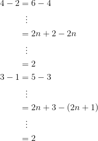
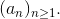

Progresii aritmetice
Fie şirul de numere naturale nenule , cu proprietatea că diferenţa a două numere consecutive, începând cu cel de-al doilea număr, este egală cu unu.
Exemplu:
.
Cu alte cuvinte, în şirul de mai sus fiecare termen, începând cu cel de-al doilea, se obţine din precedentul prin adăugarea unităţii:
În continuare, exemplificăm câteva astfel de şiruri:
- unde
- unde
Observăm că la cele două şiruri de mai sus, diferenţa a doi termeni consecutivi, începând cu cel de-al doilea, este constantă și egală cu  :
:

Astfel de şiruri se numesc progresii aritmetice.
Definiția P1: Progresie aritmetică
Fie şirul 
Se numește progresie aritmetică acel şir pentru care fiecare termen al său, începând cu cel de-al doilea, se obţine din precedentul său prin adăugarea (adunarea) aceluiaş număr, notat cu  .
.
Numărul r se numeşte raţia progresiei aritmetice.
Dacă este o progresie aritmetică, atunci avem următoarea relaţie de recurenţă:
Pentru a arăta că şirul este o progresie aritmetică, trebuie arătat că diferenţa a doi termeni consecutivi şi  este constantă.
este constantă.
Folosind relaţia  , avem:
, avem:
unde este o constantă, oricare ar fi 
Observații:
- Dacă se cunosc primul ternen şi raţia , atunci progresia aritmetică este bine determinată, adică se pot determina toţi termenii acesteia, folosind relația de recurență :
Notație: Şirul este o progresie aritmetică şi notăm sau
- Numerele sunt într-o progresie aritmetică, dacă sunt termenii consecutivi ai unei progresii aritmetice, adică:
Exerciții rezolvate:
Să se arate că numerele sunt termenii unei progresii aritmetice.
Soluţie:
Aplicăm Observaţia 2 și obținem că:
Așadar, numerele sunt termenii consecutivi ai unei progresii aritmetice, având raţia egală cu .
- Care dintre următoarele şiruri sunt progresii aritmetice:
-
Soluție:
- Observăm că diferenţa a două numere consecutive, începând cu cel de-al doilea număr, este egală cu
 .
.

Așadar, șirul  este o progresie aritmetică.
este o progresie aritmetică.
- Analog subpunctului anterior, verificăm dacă diferența a două numere consecutive din șirul dat este constantă:
.
Observăm că diferenţa dintre doi termeni consecutivi, începând cu cel de-al doilea număr, nu mai este egală, deci şirul nu este o progresie aritmetică.
- Să se scrie primii patru termeni ai unei progresii aritmetice, dacă se cunosc următoarele:
-
Soluție:
- Folosind relaţia , avem:
Avem progresia aritmetică  .
.
- Din relația , obținem că:

Avem progresia aritmetică .
În pagina următoare vei găsi câteva proprietăți ale progresiilor aritmetice, precum și exemple ilustrative, care te vor ajuta să înțelegi și să aplici corect proprietățile prezentate.